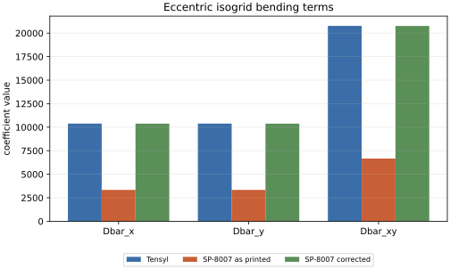
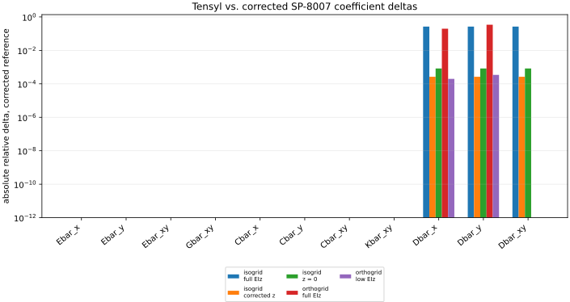
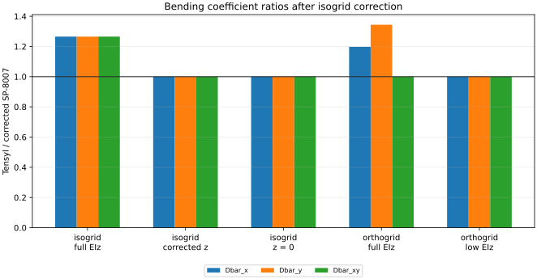
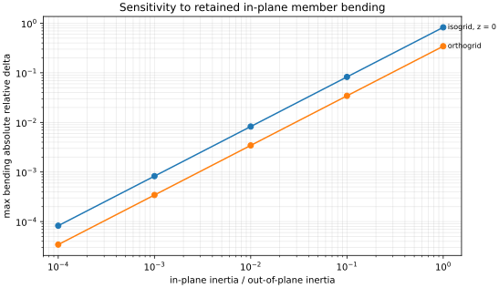
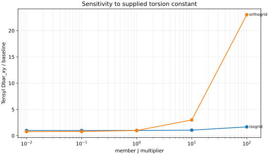

SP-8007 Reconciliation
This page compares Tensyl's tangent-plane stiffnesses with the elastic-constant formulas in NASA SP-8007 Section 4.1.2.6. It is not a calibration exercise. SP-8007 is a published design reference, but it is not an oracle for Tensyl, and Tensyl is not an oracle for SP-8007. The useful question is narrower and harder: when the numbers diverge, which physics did each model keep or throw away?
The SP-8007 source used for this audit is Mark Hilburger's Buckling of Thin-Walled Circular Cylinders, NASA/SP-8007-2020/REV 2: https://ntrs.nasa.gov/citations/20205011530.
Read This First
The isogrid equations in SP-8007 Eqs. 97-98 omit the explicit parallel-axis
EA z^2 bending terms. The same section includes eccentric
extensional-bending coupling terms, and the earlier general stiffener formulas
include the corresponding parallel-axis contribution. For a centroidal
stiffener offset from the reference surface, the EA z^2 bending energy is part
of the stiffness. Tensyl includes that term.
For the eccentric isogrid cases, this audit therefore reports two SP-8007 references:
- SP-8007 as printed;
- SP-8007 with the missing isogrid parallel-axis terms restored.
The correction used here is
and
With that correction, the large eccentric-isogrid discrepancy goes away in the case where in-plane member bending has been suppressed. The remaining differences come from model content.
What Was Compared
The audit computes three sets of coefficients for each case. First it evaluates the SP-8007 equations as printed: ring-and-stringer orthogrids use Eqs. 82-91, and equilateral isogrids use Eqs. 92-98. Second it applies the isogrid correction above where it is needed. Third it computes a Tensyl ABD stiffness and extracts the same SP-8007-style barred coefficients from that matrix.
For a cylinder, Tensyl's local e1 direction is axial and e2 is
circumferential, so the mapping is:
| SP-8007 coefficient | Tensyl source |
|---|---|
Ebar_x |
A[0, 0] |
Ebar_y |
A[1, 1] |
Ebar_xy |
A[0, 1] |
Gbar_xy |
A[2, 2] |
Dbar_x |
D[0, 0] |
Dbar_y |
D[1, 1] |
Dbar_xy |
2*D[0, 1] + 4*D[2, 2] |
Cbar_x |
B[0, 0] |
Cbar_y |
B[1, 1] |
Cbar_xy |
B[0, 1] |
Kbar_xy |
B[2, 2] |
The last bending row is the easy place to make a bad comparison. SP-8007's
\bar{D}_{xy} is a modified twisting stiffness, not Tensyl's D66 entry by
itself. With Tensyl's engineering twist convention, the coefficient is
The named cases in the plots are:
| Plot label | Model | What changed | Why it is in the audit |
|---|---|---|---|
orthogrid full EIz |
Orthogrid | Uses the full member in-plane bending stiffness, EIz = E * 1.20e-3 in^4. |
Shows Tensyl's cross-family in-plane bending contribution. |
orthogrid low EIz |
Orthogrid | Reduces in-plane bending to EIz = E * 1.20e-6 in^4. |
Shows that the orthogrid bending mismatch collapses when the missing SP-8007 term is made small. |
isogrid full EIz |
Isogrid | Uses full EIz and eccentric stiffeners. |
Shows the combined effect of retained in-plane member bending and eccentric axial bending. |
isogrid z = 0 |
Isogrid | Uses low EIz and zero eccentricity. |
Checks the centered-member isogrid limit where the printed and corrected SP-8007 formulas are the same. |
isogrid corrected z |
Isogrid | Uses low EIz and eccentricity z = 0.32 in. |
Isolates the missing EA z^2 terms in SP-8007 Eqs. 97-98. |
All five cases use the same material, skin thickness, stiffener area,
out-of-plane inertia, torsion constant, and local spacing or pitch unless the
table says otherwise. The baseline values are E = 10.6e6 psi, nu = 0.33,
t = 0.080 in, A = 0.030 in^2, Iy = 1.20e-3 in^4, J = 2.50e-4 in^4,
orthogrid spacings bs = 6 in and br = 8 in, and isogrid pitch a = 6 in.
Correcting the Isogrid Typo
The plot below isolates the eccentric isogrid case with the member in-plane
bending inertia driven very small. SP-8007 as printed omits the eccentric axial
energy in the bending terms. Once the EA z^2 terms are restored, Tensyl and
the corrected hand formula agree to the residual left by the intentionally tiny
EIz.

The bars compare the same physical case three ways. The blue bar is Tensyl. The
orange bar is SP-8007 exactly as printed. The green bar is SP-8007 with the
EA z^2 correction restored. The green and blue bars lie together because the
missing printed term is the source of the large orange-bar gap.
After this correction, the main isogrid discrepancy is not a Tensyl problem. It
is the missing printed EA z^2 term in SP-8007 Eqs. 97-98.
Orthogrid Model Difference
The orthogrid mismatch is different. It is not affected by the isogrid correction, and it is not a convention problem. Tensyl retains a member stiffness that the SP-8007 ring/stringer formulas in Eqs. 89-91 do not include.
Tensyl's member strain map gives each rib or stringer a finite in-plane bending stiffness contribution when the equivalent wall bends across that member. For an axis-aligned orthogrid, the SP-8007 printed formulas include same-family out-of-plane bending and eccentric axial bending:
Tensyl also includes the cross-family in-plane bending terms:
In plain terms, a rib contributes stiffness when the wall bends axially across it, and a stringer contributes stiffness when the wall bends circumferentially across it. If that member has in-plane bending stiffness, Tensyl stores that energy. The SP-8007 orthogrid hand equations used here do not.
The coefficient-level comparison below uses the corrected SP-8007 reference.
The membrane terms, coupling terms, and modified twisting term agree to roundoff
for the orthogrid cases when the inputs are normalized the same way. The bending
terms remain different until the cross-family EIz contribution is made small.

This plot is a corrected-reference error plot. Bars at the bottom of the log
axis are roundoff-level agreement. The remaining visible bars are bending terms.
For the orthogrid full-EIz case, those bars are the cross-family in-plane
bending terms retained by Tensyl and omitted by SP-8007 Eqs. 89-91. For the
low-EIz cases, the bars collapse because the omitted term has been made small.
The bending ratios show the same point more directly.

This plot divides Tensyl's bending coefficients by the corrected SP-8007
values. A ratio of 1.0 means the two calculations agree. The orthogrid full
EIz case rises above 1.0 in Dbar_x and Dbar_y because Tensyl includes the
rib and stringer cross-family EIz terms. The low-EIz and corrected-isogrid
cases sit at 1.0 because the isolated formula error has been corrected and
the retained member-bending residual has been made small.
And the sweep below makes the mechanism explicit. As the member in-plane inertia is reduced relative to its out-of-plane inertia, the orthogrid bending mismatch collapses.

The horizontal axis is the ratio Iz / Iy used for the stiffener section. Moving
left makes the member closer to a blade with negligible in-plane bending. Moving
right makes the member closer to a section with comparable in-plane and
out-of-plane bending stiffness. The error grows with Iz / Iy because the
missing SP-8007 contribution is proportional to EIz.
Engineering Impact
The orthogrid mismatch lives in the bending block of the equivalent wall law. It
does not change the basic axis-aligned membrane A terms in these cases. An
SP-8007 orthogrid reduction underpredicts bending stiffness when the stiffener
has meaningful in-plane section inertia.
The impact is largest for grids where the stiffener is not a slender blade. Wide
caps, flanges, tees, channels, z-stiffeners, hat sections, box-like stiffeners,
and closed or nearly closed sections can all have enough EIz for the
cross-family term to matter. Dense grids and thin skins make the effect easier
to see because the member stiffness is spread over a smaller wall area and the
skin contributes less of the total bending stiffness.
The downstream impact is usually a buckling or load-redistribution impact. A
classical orthotropic-cylinder calculation that receives the lower SP-8007
bending terms can predict different buckling loads, different preferred modes,
or different margins than a calculation that receives Tensyl's full ABD
stiffness. The sign of the margin change depends on the load, shell geometry,
mode shape, and knockdown workflow. Engineers should not collapse a
stiffener-rich wall into SP-8007 barred constants without checking how much
EIz has been removed.
For these orthogrid cases, Tensyl includes first-order section physics that the compact SP-8007 ring/stringer formulas omit.
Which J Should Be Used?
The torsion constant is not a universal number. BeamSection.GJ should be the
torsional stiffness of the member idealization you mean to put into the
homogenized wall.
Use an open-section St Venant J when the stiffener behaves like a freely
warping open member. That is the assumption behind Tensyl's simple thin-wall
section helper:
This is the correct input for blades, angles, tees, channels, and other open members when warping is not strongly restrained.
Use a closed-cell torsional stiffness when the actual modeled member has a
closed shear-flow path. A closed hat bonded to a skin, a tube, or a box can have
a torsional stiffness many times larger than the open-section estimate. But the
closure has to belong to the member model. If the skin is already present as a
separate plate in the ABD calculation, adding a closed-cell J that also uses
that same skin can double-count skin shear stiffness.
Use a restrained-warping torsional stiffness when the boundary conditions, attachments, or neighboring structure prevent the section from warping freely. That value is usually a section-analysis or finite-element result, not the free St Venant constant and not the closed-cell Bredt constant by itself.
Open-section J, closed-cell J, and restrained-warping J represent
different member models. The correct value is the torsional stiffness of the
section and boundary condition represented by the homogenized member. If that
boundary condition is uncertain, bracket it. The plot below shows how much the
modified twisting stiffness moves when the supplied member J is swept over
large factors.

This plot does not choose a torsion model. It shows the consequence of the J
value supplied to the member. The orthogrid line moves strongly because its
modified twisting stiffness receives direct stringer and rib GJ terms. The
isogrid line moves less in this synthetic case because the same coefficient also
contains larger bending and corrected eccentric-axial contributions. A closed
cell or restrained-warping model can move a real design along this axis by large
factors.
Guidance
Use the SP-8007-style coefficients when a downstream classical
orthotropic-cylinder calculation expects exactly that data shape. In that
workflow, export the coefficients with the mapping above, keep the assumptions
with the artifact, and do not pass D66 as \bar{D}_{xy}.
Keep the full Tensyl ABD stiffness when the wall has meaningful off-axis terms, strong membrane-bending coupling, or section properties that do not match the simplified SP-8007 assumptions. Reducing a richer wall law to a short list of barred constants can be the right handoff, but it is a reduction.
Be especially careful with these inputs:
EIz: Tensyl retains cross-family in-plane member bending, while the SP-8007 orthogrid expressions used here do not expose the same term.- Eccentricity: SP-8007 isogrid Eqs. 97-98 should be corrected for explicit
EA z^2bending terms before drawing physics conclusions. J: open-section St Venant torsion, closed-cell torsion, and restrained warping can differ by large factors; choose the value that matches the member model and boundary condition.
Artifacts
The committed evidence lives under
validation/artifacts/committed/sp8007_reconciliation/:
comparison_table.jsonandcomparison_table.csvcontain the coefficient rows, including the printed and corrected SP-8007 references;summary.jsonrecords the worst corrected-reference term by case and the interpretation notes;inplane_bending_sweep.jsonrecords theEIzsweep;torsion_sweep.jsonrecords theJsensitivity sweep;manifest.jsonrecords provenance for the run.
Regenerate the report data with:
uv run python validation/scripts/build_sp8007_reconciliation.py
The public mechanics references for this page are NASA SP-8007 and Nemeth's equivalent-plate treatise, both listed in References.